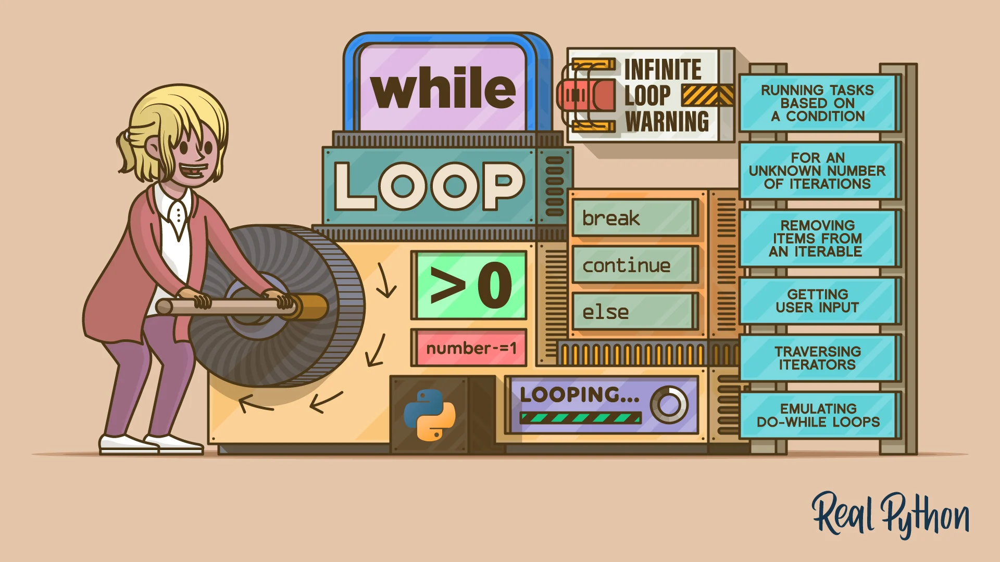

Understanding the Concept: What Are Loops, Really?
A loop in programming is a way to repeat a set of instructions multiple times until a condition is met.
It's like going through your daily checklist,you repeat each task every day until all are done.
Types of loop
- The for loop
- The for else loop
- Nested loop
- while loop
- Infinite loop
- while-else loop
The for loop
A for loop in Python is used when you want to repeat an action a specific number of times, usually by going through items in a sequence like a list or a range.
It is predictable because you know exactly how many times it will run.
Think of it like this: imagine you're giving out notebooks to students in a row. You already know there are 10 students, so you go from one to the next, handing out exactly 10 notebooks.
That is how a for loop works; it goes through each item, one after the other, doing the same task. For exampleüëá:
for i in range(5): print(i)
Learn more about for loops and its syntax here
The For-else loop
In Python, a for...else loop allows the else block to run only if the for loop completes all its iterations without hitting a break.
So:
- If the for loop runs to the end normally → else block executes ✅
- If the for loop is interrupted by a break → else block is skipped ❌
It's different from if...else, where the else runs when the if condition is false.
Here, the else depends on whether or not the loop was broken out of, not on a condition being true or false.
Think of it like this:
You're told to run 5 laps around a track. If you complete all 5 laps without stopping, you get a bottle of water; that is the else block.
But if anything interrups your run; like you fall or it starts raining, or there is an emergency (that is a break.)
In that case, you don’t get the bottle of water. The break cuts the loop short, so the else never runs.
Nested loops
Nested loop literally means a loop inside another loop.
When the first (outer) loop starts, the second (inner) loop runs completely for each step of the outer loop. Once the inner loop finishes, the outer loop moves to its next value; and the inner loop starts all over again.
So, the outer loop is kind of like the commander.

Analogically;
I like to think of this as a relay race. When the race starts, the first group (the outer loop) hands the baton to the second group (the inner loop) and says:
“You guys run your full round, then I’ll move to my next lap and you’ll run again.”
It's like the outer loop's main job is just to kick things off, while the heavy lifting is done inside the inner loop.
Outer loop says:
“For each of my values…”
Inner loop responds:
“Okay, fine... I’ll run through all my values again.”
Learn more about nested loops
while loop
A while loop keeps running as long as a condition remains true. The moment the condition becomes false, the loop stops.

Think of it like this:
“If the sun rises before 7 a.m., you must go to school.”
As long as that condition is true, the action happens. Once it’s false, it stops.
üîÑ How is it different from a for loop?
- A for loop is used when you know how many times something should happen.
"Go through all items in this bag one by one until you're done."
A while loop is used when you don’t know how many times yet; it just depends on the condition.
"Keep singing until the generator comes on." You don’t know how many minutes they’ll sing; only the condition (no light) controls when to stop.
Or like when a user is trying to enter a password: they can’t log in until it matches. As long as the password is incorrect (condition is true), the program keeps asking. Once the password is correct, the condition becomes false and the loop ends.
If the condition never changes, a while loop could run forever; that’s why it’s important to make sure it eventually becomes false.
Infinite loop
This happens when the condition NEVER turns FALSE. If this happens, the loop never breaks unless you exit the program or force it to stop.

This can be likened to a fan that continues spinning as long as it is plugged in.
This is applied in some real-life programs, like servers, ATM machines, or chatbots, you don’t want them to stop running. They’re supposed to be always ready to respond to a user, a request, or a signal.
An infinite loop is what makes you connect to WhatsApp any time.
while-else loop
Yes, Python has a while-else loop.
The else block comes after the while loop and runs only if the while loop ends naturally; that is, without being interrupted by a break statement.
Loop control statements
Loops are great for repeating actions, but sometimes you need to stop, skip, or temporarily do nothing; depending on what’s happening inside the loop.
That’s where loop control statements like break, continue, and pass come in.
- üî¥ break: Stop everything
The break statement ends the loop immediately; no questions asked.
Analogy:
Imagine someone is told to keep walking around a neighborhood until they see a yellow house.
The moment they spot the house, they stop walking, even if there are more houses ahead.
- ⏭️ continue: Skip and move on
continue is like a skip button
Analogy:
You’re checking a list of names for a party invite but want to skip anyone whose name starts with “X.” Instead of stopping the whole list, you just skip that one and move on.
- üöß pass: Do nothing (for now)
Sometimes, you’re not ready to write the code inside a loop or condition, but Python still expects something there. That’s when pass comes in.
Analogy:
It’s like telling Python, “I’ll come back to this later, just keep going for now.”
Learn more about infinite loops
“From skipping names to spotting yellow houses, I hope these analogies made loops feel less like a mystery and more like second nature. Now go loop with confidence!”
I'll also leave you with this image that represents loop in this capitalist world of todayüòÇ